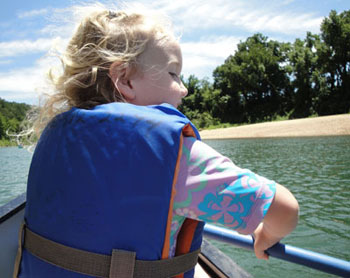

In preparation for a float trip, here are several pages you might want to take a look at. If you haven't been floating with us before, you have a real treat in store for you. The Buffalo River is one of the country's best-kept secrets. It was designated as a National River by Congress in 1972. This protection has allowed it to flourish and remain a wild, unspoiled haven.

Every season has its unique advantage. Spring is beautiful with the river flowing swiftly and wild flowers springing to life along the river's edge. Summer is a great time to stop for picnics and swimming along the way. Fall is especially nice with the brilliant foliage along the river. The water is not as fast, but the scenery is well worth it. Winter gives you an unobstructed view for bird watching. The stark winter colors in the foliage provides a dramatic backdrop to the river.
Check out these links for more information about our beloved river:
Buffalo National River
Arkansas, the Natural State
Buffalo River Floater's Guide